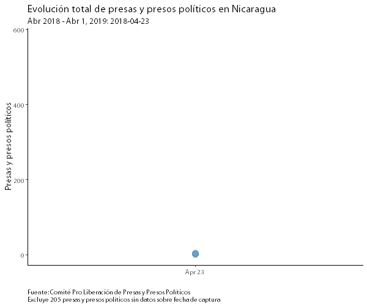

Presos y presas políticos en Nicaragua
Desde mi cuenta en twitter, he compartido gráficos y analizado diversos datos sobre la crisis política en Nicaragua. Este post tiene dos objetivos: (1) presentar la información actual sobre el total de presas y presos políticos, y (2) compartir herramientas para la elaboración de gráficos.
Los datos
Los datos que ocupo provienen del Comité Pro Liberación de Presas y Presos Políticos. Pueden encontrar las datos en la página web del comité, o pueden descargarlos acá. Los principales problemas de los datos del comité es que están en un archivo pdf, y no están “limpios.” Por limpio, me refiero a que no ha habido ninguna transformación de las variables para hacer análisis de datos. Sobre esto, tal vez en el futuro, me animo a realizar un pequeño post sobre limpieza de datos.
El gráfico
El gráfico de la evolución total de presos y presas políticos es el siguiente:

De hecho, es un gráfico sencillo de replicar en R y necesitamos pocos paquetes para ello.
Códigos
Lo primero que tenemos que hacer es cargar nuestras librerías. Necesitamos tres paquetes: ggplot, gganimate, dplyr, y extrafont.
library(ggplot2)
library(gganimate)
library(dplyr)
library(extrafont)Ahora, la parte interesante sería realizar el gráfico. Sin embargo, a como mencioné anteriormente, debemos limpiar un poco la base de datos.
Primero, ordenamos los datos a partir de la fecha usando arrange, luego vamos a crear un ID y lo utilizaremos para crear un acumulado por día de la siguiente forma:
arrange_data <- arrange(data, fecha)
arrange_data$id <- 1
arrange_data$acumulado <- cumsum(arrange_data$id)Ahora utilizamos ggplot y gganimate para crear el gráfico.
# plot del total de presos y presas políticas
animate <- ggplot(data = na.omit(arrange_data), aes(x = fecha,
y = acumulado)) +
geom_point(alpha = 0.3, size = 5, colour = "steelblue") +
theme_classic() +
# labels and fonts
labs(title = "Evolución total de presas y presos políticos en Nicaragua",
subtitle = "Abr 2018 - Abr 1, 2019: {frame_time}",
y = "Presas y presos políticos",
x = "",
caption = "Fuente: Comité Pro Liberación de Presas y Presos Políticos\nExcluye 205 presas y presos políticos sin datos sobre fecha de captura") +
theme(text=element_text(size=14, family="Myriad Pro"),
plot.caption = element_text(hjust = 0)
) +
# transition options
transition_time(fecha) +
view_follow(fixed_y = TRUE) +
shadow_mark(size = 3, colour = 'grey', alpha = 0.3) +
ease_aes('linear')Este código se puede desagregar en tres cosas: (1) los datos y axis; (2) diseño, etiquetas, y letra; y (3) transiciones.
La primera parte del código son los datos. Tenemos que quitar todas las observaciones que no tienen datos, por lo cual utilizamos na.omit(). Y nuestras variables de referencia son: x = fecha y y= acumulado (i.e., la variable que creamos anteriorment). El tema que ocupo es el clásico, y con los siguientes valores de los puntos de datos geom_point(alpha = 0.3, size = 5, colour = "steelblue").
La parte de las etiquetas es un poco más sencillo, así que lo omitiré. Solo un punto a recordar es que utillizo Myriad Pro, y para poder “cargarla” en RStudio, necesitan el paquete extrafont.
Por último, las opciones de transición. La variable fecha es nuestro tiempo de transición. Ésta variable nos da nuestra punto de partida y final. Para fijar el eje y utilicé view_follow(). Si no lo ocupo, tanto el eje x y eje y no serían fijos. Para darle seguimiento a los puntos, utilicé shadow_mark(); el cual me deja ajustar el tamaño del punto y color. La última opción es ease_aes(), la cual se ocupa para definir el cambio de un valor a otro durante la interporlación. En este caso utilicé la función lineal (i.e., linear).
Para poder compilar nuestro gráfico tenemos que llamar el objeto animate que creamos anteriormente con el comando animate(), de la siguiente forma.
animate(animate, height = 500, width = 600)El primer argumento es nuestro objeto, y el segundo y tercero son la altura y ancho el gráfico respectivamente.
Para guardar nuestro gráfico utilizamos anim_save, y recordamos escribir nuestra extensión. En este caso .gif.
anim_save("gif/preso_total_190401.gif")Y así es como creamos nuestro gráfico animado con gganimate en R.

Finn